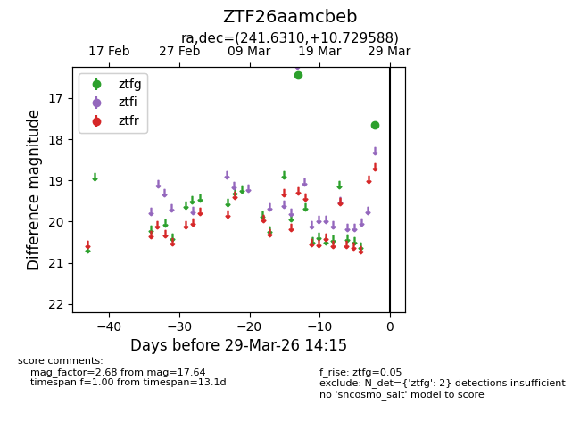
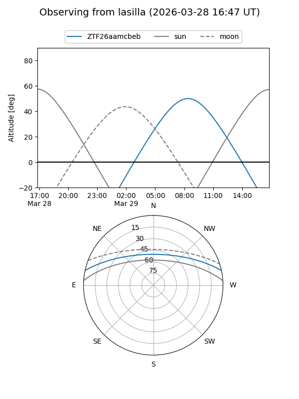
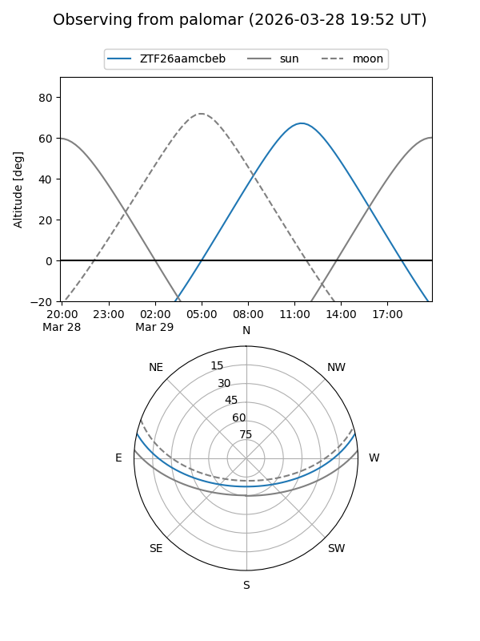

ZTF26aamcbeb
Target ZTF26aamcbeb at 2026-03-29 14:18
Aliases and brokers:
FINK: link
Lasair: link
ALeRCE: link
alt names
ZTF26aamcbeb (ztf,fink_ztf)
Coordinates:
equatorial (ra, dec) = 241.6310,+10.72959
equatorial (HMS+DMS) = 16:06:31.44,+10:43:46.52
galactic (l, b) = (22.9860,+41.39115)
Flags:
Photometry:
last ztfg=17.64
2 ztfg detections
Lightcurve

Visibility


Additional plots